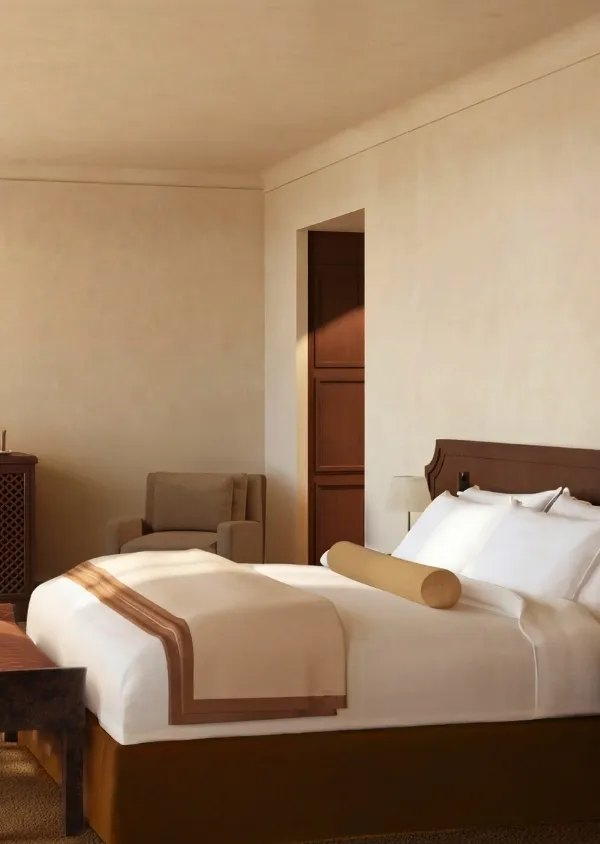
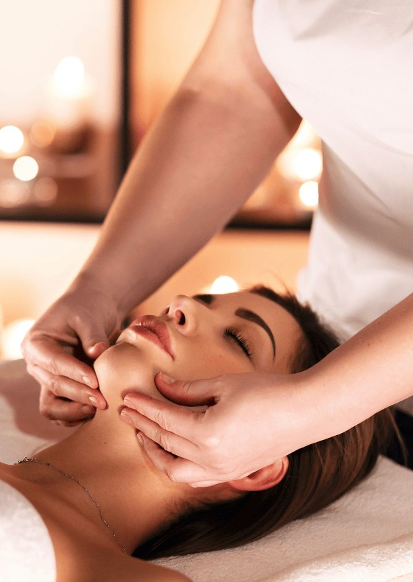

Villa Florentine Lyon : avis 2026 sur l'unique Relais & Châteaux de la ville
Ancien couvent du XVIIe siècle perché sur la colline de Fourvière, racheté par Beauvallon Collection et rouvert le 30 avril 2026 après quatre mois de travaux. Nouvelle direction artistique, nouveau chef, nouveau spa.

La Villa Florentine sur la colline de Fourvière : façade ocre, toits de tuiles et piscine extérieure chauffée dominant Lyon. Photo : Villa Florentine, site officiel.
L'essentielScore LMHS 9,3/10, Indice Prestige Patrimonial 4,8/5
- Score LMHS : 9,3/10. Note reprise à l'identique de notre palmarès des hôtels de Lyon, où la Villa Florentine occupe la première place, afin qu'une même adresse ne porte jamais deux notes différentes sur ce site.
- Indice Prestige Patrimonial LMHS : 4,8/5. Indice thématique propre à cette page : qualité de la restauration du bâti, fidélité à l'histoire du lieu, cohérence de la direction artistique, intégration dans l'identité lyonnaise.
- Distinctions : membre Relais & Châteaux, seul de Lyon. Gault & Millau classe la maison Hôtel Exceptionnel. Troisième des 147 hôtels lyonnais au classement TripAdvisor.
Avis documentaire. Nous n'avons pas séjourné sur place depuis la réouverture, et nous le disons plutôt que de le laisser croire. Tout ce qui suit repose sur les supports officiels de l'établissement, ceux de Beauvallon Collection et de Relais & Châteaux, relevés le 7 août 2026.
Un ancien couvent du XVIIe siècle transformé en palace
Perchée sur la colline de Fourvière, la Villa Florentine incarne la cristallisation de l'esprit lyonnais. Cette ancienne demeure du XVIIe siècle, ancien couvent, s'impose comme un trésor patrimonial et un havre de quiétude. Entrée dans le giron de Beauvallon Collection le 2 octobre 2025, elle a connu une rénovation spectaculaire de quatre mois, rouvrant ses portes le 30 avril 2026 avec une identité renouvelée.
Joséphine Fossey, architecte d'intérieur en charge de la direction artistique, a orchestré une métamorphose remarquable : sobriété, unité, minimalisme épuré. Les murs retrouvent un blanc-crème virginal, contrastant avec les boiseries sombres, le cuir, le châtaignier. Les portes monumentales à pointes de diamant à l'entrée, les fresques peintes au-dessus de la mezzanine, le salon anglais avec billard et globe terrestre : chaque détail respire l'élégance discrète. Matériaux nobles, pierre, chêne massif, soieries, mosaïques ; objets éclectiques, gravures anciennes, sculptures de marbre. L'ensemble crée une atmosphère intemporelle, loin de l'ostentation, autour d'une identité que la maison revendique désormais comme monastique, florentine et lyonnaise à la fois.
Les chambres et suites : 36 clés entre 23 et 128 m²

La rénovation signée Joséphine Fossey : blanc-crème, boiseries sombres, matériaux nobles. Photo : Villa Florentine, site officiel.
La Villa Florentine propose 36 chambres et suites réparties en 11 catégories, de 23 à 128 m². Chaque espace respire l'épure : lits King Size irréprochables, produits de bain Apoticari, tisane du soir au chevet, climatisation modulable, douches doubles. Les vues dominent : sur Lyon, sur Fourvière ou sur les jardins intérieurs. La Suite Deux Chambres accueille jusqu'à quatre personnes avec salles de bain privatives, grand salon vestibule et plateau de bienvenue. Les toits de Lyon se saupoudrent d'or au crépuscule. Chaque chambre est une invitation au voyage immobile, où le minimalisme épuré rivalise avec l'élégance discrète.
| Catégorie | Surface | Particularité |
|---|---|---|
| Chambre Supérieure | 23-39 m² | Lit Queen |
| Deluxe | 35 m² | Lit King |
| Deluxe avec terrasse | 33-47 m² | Terrasse privative |
| Suite Junior Mezzanine | 38-77 m² | Mezzanine |
| Suite Junior | 43-80 m² | Balcon ou terrasse |
| Suite Junior Signature | 37 m² | Décor signature |
| Suite Junior Vieux-Lyon | 37-53 m² | Vue Vieux-Lyon |
| Suite | 60 m² | Balcon ou terrasse |
| Suite Junior Médicis | 83 m² | La plus vaste des Junior |
| Suite Deux Chambres | 105-118 m² | Jusqu'à 4 personnes |
| Suite Deux Chambres avec terrasse | 126-130 m² | Terrasse panoramique |
Catégories et surfaces publiées par l'établissement, relevées le 7 août 2026.
La Table de la Villa Florentine : Henri Carlier et la cuisine du territoire
Henri Carlier, formé à Ferrandi Paris et passé chez Jean-Louis Nomicos, Cyril Lignac, Christian Le Squer au Cinq, Arnaud Donckele à La Vague d'Or et Hugo Bourny au Lucas Carton, dirige La Table de la Villa Florentine. Sa philosophie : transmission et territoire. Sourcing exemplaire : truite et omble de Charles Murat (Beaufort, Isère), fromages affinés Mons (Loire), fleurs et pousses de Jean-Luc Raillon (Drôme), pain au marc de bière de la boulangerie Saint-Paul.
Plats signatures : omble de fontaine avec sauce veloutée et concombre fermenté ; truite arc-en-ciel avec purée de céleri et bouillon yuzu ; poulet de l'Isère avec sauce verjus, gelée de Chartreuse et bourgeons de sapin ; dessert fraise aux multiples textures. Menus : Découverte Végétale 90 € (4 plats), Traversée 130 € (4 plats), Échappée 160 € (6 plats). Ouvert du mardi au vendredi de 19 h à 21 h 15, le samedi de 12 h à 13 h 30 et de 19 h à 21 h 15. Terrasse panoramique avec vues sur Lyon, Fourvière et les Alpes, le mont Blanc par temps clair. Ouvert aux clients extérieurs. Brunch dominical « Florentine » de 11 h à 13 h 30.
Le Comptoir : la bistronomie lyonnaise par Henri Carlier
Le Comptoir propose une interprétation plus libre et conviviale de la cuisine d'Henri Carlier. Bistronomie française et italienne, assis autour d'un grand comptoir, ambiance chaleureuse. Menu 3 plats à 55 €. Ouvert du lundi au vendredi midi de 12 h à 13 h 30, et du jeudi au lundi soir de 19 h à 21 h 30. Ouvert aux clients extérieurs. C'est ici que la gastronomie lyonnaise se fait accessible, sans renier l'excellence.
Le Speakeasy Spa et la piscine panoramique

Le Speakeasy Spa, ouvert en juin 2026 en partenariat avec la marque auvergnate Apoticari. Photo : Villa Florentine, site officiel.
Le Speakeasy Spa, ouvert en juin 2026, incarne le bien-être contemporain. Hammam, sauna sous voûte, cabines de soin, tisanerie Apoticari, marque botanique auvergnate installée au Puy-en-Velay. Fitness complet. Piscine extérieure chauffée toute l'année sur la terrasse, réservée aux clients de l'hôtel, avec vue panoramique sur Lyon.
Le salon de thé est, lui, ouvert à la clientèle extérieure : thés Lydia Gautier, pâtisseries d'Hippolyte Fedry, passé par l'Auberge du Pont de Collonges. Pavlova divine. Segreto, le speakeasy de la Villa, offre cocktails artisanaux, piano live les jeudis et vendredis soir, ambiance de velours entre carmin profond et brun mordoré.
Les tarifs de la Villa Florentine
Notre relevé situe la Villa Florentine entre 203 € la nuit en entrée de gamme et 502 € pour les catégories supérieures en haute saison, les suites avec terrasse dépassant nettement ce plafond. Ces montants sont ceux publiés dans notre palmarès des hôtels de Lyon.
Un avertissement utile : les grilles qui circulent sur les comparateurs affichent souvent ces prix en dollars, ce qui gonfle artificiellement la lecture pour un lecteur français. L'établissement facture en euros. Vérifiez la devise avant de comparer, et privilégiez la réservation directe, où la grille est affichée en euros et les conditions plus souples.
Notre verdict LMHS
La Villa Florentine Lyon mérite son statut d'unique Relais & Châteaux de la ville. Rénovation exemplaire, respect du patrimoine, direction artistique impeccable, gastronomie d'excellence, spa contemporain, vues incomparables : tout converge vers une expérience de luxe discret et authentique. Le score LMHS de 9,3/10 reflète une excellence globale et place la maison en tête de notre palmarès lyonnais. L'Indice Prestige Patrimonial de 4,8/5 souligne la qualité de la rénovation et son intégration dans l'identité lyonnaise. Le classement Hôtel Exceptionnel de Gault & Millau et la troisième place sur 147 hôtels lyonnais chez TripAdvisor confirment la reconnaissance. Pour qui cherche un palace lyonnais loin de l'agitation, avec gastronomie créative et vues sur les Alpes, c'est l'adresse incontournable.
Le mot d'EmmanuelRénover un patrimoine sans le dénaturer
La Villa Florentine incarne ce que le luxe contemporain devrait être : discret, authentique, enraciné. Beauvallon Collection a compris que rénover un patrimoine ne signifie pas le dénaturer, mais le révéler. Joséphine Fossey a orchestré cette révélation avec une sobriété rare. Henri Carlier y apporte une gastronomie généreuse, ancrée dans le territoire. Les vues sur Lyon, Fourvière, les Alpes, les toits saupoudrés d'or au crépuscule : c'est du cinéma quotidien. Voilà un hôtel qui respire, qui pense, qui transmet. Rare. Je n'y ai pas dormi depuis la réouverture, et je ne vais donc pas vous raconter le petit-déjeuner : ce qui précède est documentaire, et j'irai vérifier.
Emmanuel Laveran, rédacteur hôtels et gastronomie
FAQ : questions fréquentes sur la Villa Florentine
Comment réserver à la Villa Florentine Lyon ?
Réservation directe via le site officiel villaflorentine.com, via Relais & Châteaux, ou par téléphone au +33 4 72 56 56 56. Adresse : 25 montée Saint-Barthélémy, 69005 Lyon. Arrivée à partir de 16 h, départ à 12 h. Privilégiez la réservation directe : la grille y est affichée en euros, alors que les comparateurs la convertissent souvent en dollars.
Le restaurant La Table de la Villa Florentine est-il ouvert aux clients extérieurs ?
Oui. La Table accueille les clients extérieurs. Ouvert du mardi au vendredi de 19 h à 21 h 15, le samedi de 12 h à 13 h 30 et de 19 h à 21 h 15. Réservation recommandée. Menus de 90 € à 160 €. Le Comptoir, la bistronomie de la maison, est également ouvert aux extérieurs, avec un menu 3 plats à 55 €.
Quand le spa Apoticari a-t-il ouvert ?
Le Speakeasy Spa, développé en partenariat avec la marque botanique auvergnate Apoticari, installée au Puy-en-Velay, a ouvert en juin 2026, quelques semaines après la réouverture de l'hôtel. Hammam, sauna sous voûte, cabines de soin, tisanerie, fitness.
Quelles sont les vues depuis la Villa Florentine ?
Vues panoramiques sur Lyon, la basilique de Fourvière, le Vieux-Lyon, la Saône et la Presqu'île. Par temps clair, les Alpes et le mont Blanc sont visibles depuis la terrasse du restaurant. La piscine extérieure chauffée toute l'année, avec vue panoramique, est réservée aux clients de l'hôtel.
Qui a racheté et rénové la Villa Florentine ?
Le groupe lyonnais Beauvallon Collection, propriétaire depuis le 2 octobre 2025. La rénovation, menée en quatre mois, a été confiée à l'architecte d'intérieur Joséphine Fossey pour la direction artistique. L'hôtel a rouvert le 30 avril 2026 avec 36 chambres et suites, deux restaurants dirigés par le chef Henri Carlier, un spa, un salon de thé et le speakeasy Segreto.
Avez-vous séjourné à la Villa Florentine depuis sa réouverture ?
Non. Cet avis est documentaire : il repose sur les supports officiels de l'établissement, ceux de Beauvallon Collection et de Relais & Châteaux, ainsi que sur la presse économique régionale, relevés le 7 août 2026. Le score de 9,3/10 est celui que nous avons attribué à la maison dans notre palmarès des hôtels de Lyon. Aucun partenariat, aucune affiliation, aucun séjour offert.
Méthode et sources
Avis d'établissement établi sur données publiques. Le score LMHS de 9,3/10 est repris à l'identique de notre palmarès des hôtels de Lyon, afin qu'une même adresse ne porte jamais deux notes différentes sur ce site. L'Indice Prestige Patrimonial, noté sur 5, est un indice thématique propre à cette page : qualité de la restauration du bâti, fidélité à l'histoire du lieu, cohérence de la direction artistique, intégration dans l'identité lyonnaise. Aucun séjour de contrôle n'a été effectué depuis la réouverture, et nous ne prétendons pas le contraire. Sont vérifiés et publiés : le rachat par Beauvallon Collection le 2 octobre 2025, la réouverture du 30 avril 2026 après quatre mois de travaux, la direction artistique de Joséphine Fossey, les 36 chambres et suites de 23 à 128 m², le parcours d'Henri Carlier, le partenariat du spa avec la marque auvergnate Apoticari, et l'appartenance à Relais & Châteaux. La mention « Gault & Millau 14,5/20 » qui circule n'a pas été retenue : le guide classe l'établissement Hôtel Exceptionnel, son barème sur 20 concernant les restaurants et non les hôtels. Aucun partenariat commercial, aucune affiliation, aucun séjour offert. Photographies : Villa Florentine, site officiel.
Découvrez aussi
- Les meilleurs hôtels de Lyon : du boutique-hôtel au palace, où la Villa Florentine occupe la première place
- Hôtel romantique à Lyon : 8 adresses classées
- Meilleurs hôtels 5 étoiles en France : les 10 palaces hors Paris
- Les meilleurs hôtels de luxe à Paris : 19 adresses classées
- Meilleur hammam à Lyon : 7 adresses, ce qu'elles valent
- Château Saint-Jean, avis, l'autre monument reconverti noté au même Indice Prestige Patrimonial
- Notre méthode, les grilles de notation et les règles d'indépendance